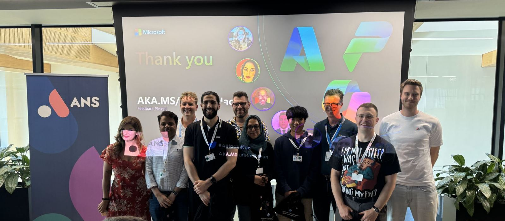
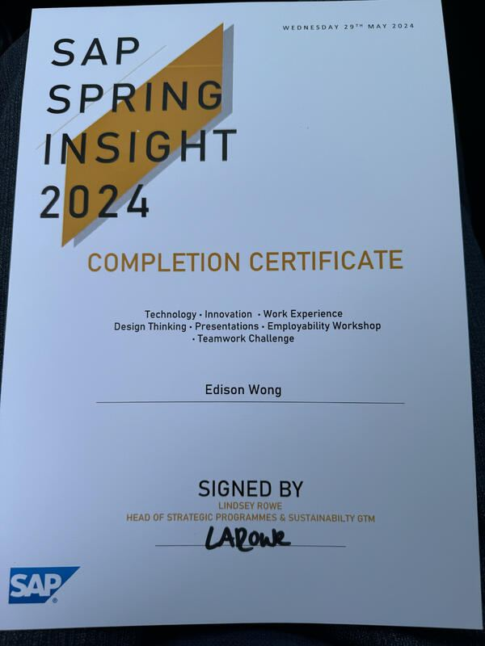
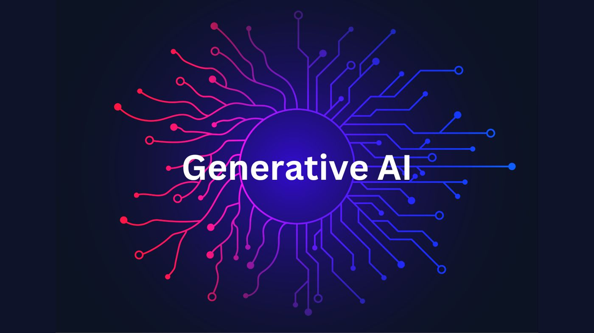

Edison Wong
IBM Exploratory Session
Tell us about a time you developed an innovative solution.


Tell us about a time when you focused on a client or customer's needs.
Show us your curiosity about technology and explain why you would be proud to work for IBM.

